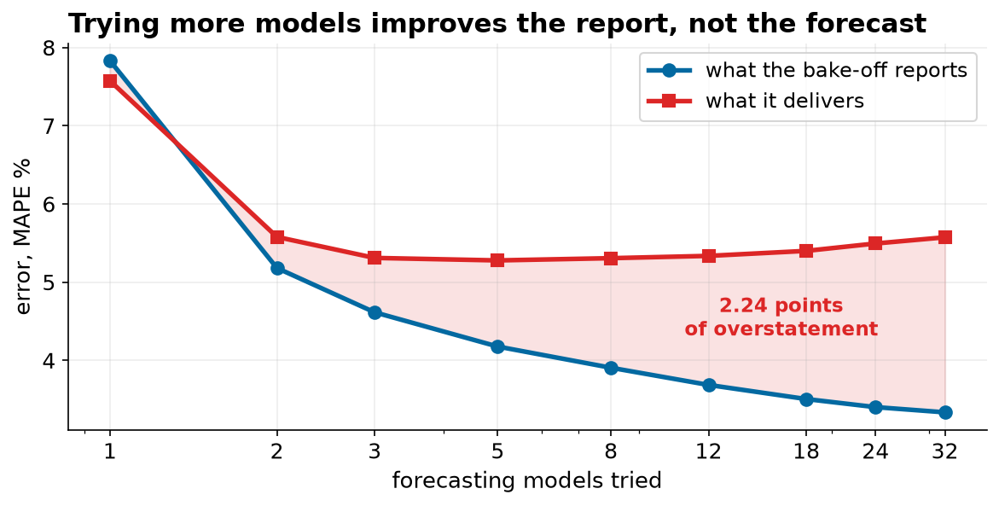
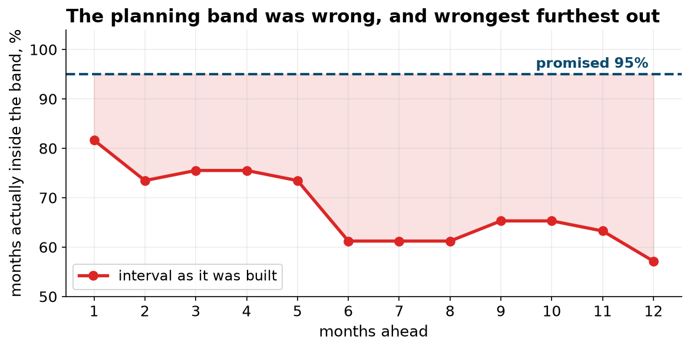

Selection Bias and Interval Calibration in a Thirty-Two Model Forecast Bake-Off
Rolling-origin evaluation against a single holdout, the optimism of best-of-K selection measured against a sealed period, and empirical coverage of prediction intervals by horizon.
Abstract
Objective. To establish whether a reported accuracy of 3.34 percent MAPE, obtained by selecting the best of 32 candidates on a single 12-month holdout, is a defensible estimate of out-of-sample forecast error, and to quantify the components of any discrepancy.
Design. A 156-month series was split into a 120-month development window and a 36-month sealed period used for no selection decision. Thirty-two candidates, comprising eight fixed rules and 24 exponential smoothing configurations, were scored by MAPE at a 12-month horizon from 17 quarterly rolling origins within the development window. Optimism was estimated by drawing 4,000 random candidate pools at each of nine pool sizes, selecting the pool minimum on the single holdout, and comparing its holdout score with its sealed-period score. Interval coverage was measured at 49 monthly origins, comparing a constant-width band from the in-sample residual standard deviation against empirical 2.5th and 97.5th percentiles of backtest errors computed separately at each horizon.
Result. The single-holdout winner ranked 23rd of 32 under rolling-origin evaluation and delivered 5.57 percent on the sealed period against its claim of 3.34, an understatement of 40 percent. Fourteen candidates won at least one of 17 origins and none won more than two. Optimism grew monotonically with pool size, from -0.26 points at K=1 to +2.24 at K=32, while sealed-period error was flat from K=2 onward. Rolling-origin selection claimed 5.47 percent and delivered 4.62. The residual-based interval, nominal 95 percent, attained 67.9 percent coverage overall and 57 percent at a 12-month horizon; the horizon-specific empirical interval attained 94 percent on the sealed period.
1. Data and preprocessing
The extract contained 156 rows against 156 complete months plus one partial. Five faults were repaired: June 2019 duplicated; a partial final month covering 11 days of January 2026, dropped; July and August 2017 absent; March 2021 recorded at 9.9 times its year-earlier value and divided by ten; and two date formats in the month column. The 2017 gap was filled by linear interpolation of the deseasonalized level, with seasonal factors from a centered 12-month moving average, then reseasonalized. Two of 156 observations are therefore imputed and enter the training window of every backtest.
The cleaned series runs 3,326 to 8,596 cases per month with a mean of 5,457. Annual totals grew 67 percent over the period, but not uniformly: 2018 to 2020 averaged 10.3 percent growth a year and 2021 to 2024 averaged 0.7 percent. December runs 29 percent above the average month and February 20 percent below.
2. Evaluation design
The horizon is 12 months, matching the planning cycle the forecast feeds. Origins advance quarterly through the development window, giving 17 evaluations from the 12 months beginning January 2018 through the 12 months beginning January 2022. Each fit uses only observations available at its origin. The sealed period supplies three further origins, January 2023, 2024 and 2025, opened after all selection was complete.
The candidate pool comprises the mean of the last 24 months, naive, seasonal naive, drift, seasonal naive with drift, three seasonally-adjusted moving averages, nine ETS structures crossing trend in {none, linear, damped} with seasonality in {none, additive, multiplicative}, and 15 further ETS configurations with the smoothing level fixed at 0.1 through 0.9.
3. Single holdout versus rolling origin
| Selection rule | Winner | Its score | Its rank under the other rule |
|---|---|---|---|
| Single holdout, Jan 2022 origin | ETS trend=none, seasonal=additive, alpha=0.1 | 3.34% | 23 of 32 |
| Rolling origin, 17 evaluations | ETS trend=linear, seasonal=multiplicative | 5.47% | 10 of 32 |
The 12 months on which the bake-off was scored grew 0.0 percent, the flattest of the 17 available windows, against 10 of 17 growing above 5 percent. Six of the eight highest-placed candidates on that holdout specify no trend and the remaining two are damped, so the leaderboard is a property of the test window rather than of the series.
Rank instability across origins is severe. The rolling-origin winner occupies ranks 1 through 22 depending on origin; seasonal naive occupies 4 through 26. Fourteen distinct candidates take first place at least once across 17 origins, with a maximum of two wins each.
4. Optimism of best-of-K selection
| Candidates tried | Reported MAPE | Sealed-period MAPE | Optimism |
|---|---|---|---|
| 1 | 7.83% | 7.57% | -0.26 |
| 2 | 5.18% | 5.58% | +0.40 |
| 3 | 4.61% | 5.31% | +0.70 |
| 5 | 4.18% | 5.28% | +1.10 |
| 8 | 3.91% | 5.31% | +1.40 |
| 12 | 3.69% | 5.34% | +1.65 |
| 18 | 3.50% | 5.40% | +1.89 |
| 24 | 3.40% | 5.49% | +2.09 |
| 32 | 3.34% | 5.57% | +2.24 |
Reported error falls by 4.49 points across the range while sealed-period error is flat from K=2 onward, varying between 5.28 and 5.58 with a slight upward drift as the pool widens. The reported figure is a minimum over K noisy measurements and is therefore a downward-biased estimate of any individual candidate's error; the bias is the quantity tabulated as optimism. At K=1 it is slightly negative, which is sampling noise around an unbiased estimate.

5. Sealed-period performance
| Selection rule | Claimed | Delivered | 2023 (+0.7%) | 2024 (+0.6%) | 2025 (+7.9%) |
|---|---|---|---|---|---|
| Single holdout | 3.34% | 5.57% | 5.33% | 4.46% | 6.93% |
| Rolling origin | 5.47% | 4.62% | 5.10% | 4.24% | 4.53% |
| Seasonal naive | not claimed | 6.76% | 6.56% | 6.54% | 7.19% |
The two selected models are within 0.25 points of each other in 2023 and 2024, both near-flat years, and diverge by 2.40 points in 2025, the only sealed year with material growth. This is consistent with the mechanism in section 3: the single-holdout winner was selected on evidence containing no growth.
The rolling-origin selection coincides with the model that minimizes sealed-period error across the pool, at 4.62 percent. This coincidence should not be read as a property of the procedure. The defensible claim is directional: selection across many origins produced a conservative accuracy claim, selection on one produced an optimistic one.
6. Interval coverage
Coverage was measured for the rolling-origin winner at 49 monthly origins in the development window, giving 588 forecast points. The conventional construction, forecast plus or minus 1.96 times the standard deviation of in-sample residuals, attained 67.9 percent against a nominal 95.

Two failure modes are present. Coverage is 82 percent at a one-month horizon, so the interval is too narrow even before horizon effects, because in-sample residuals are computed after the model has adapted to those observations and understate genuine forecast error. Coverage then declines to 57 percent at 12 months because the construction is horizon-invariant while the series has a stochastic level whose uncertainty accumulates.
| Interval | Sealed coverage | Width at h=1 | Width at h=12 |
|---|---|---|---|
| Residual standard deviation, constant | 83% | 897 | 897 |
| Empirical percentiles by horizon | 94% | 1,096 | 2,346 |
The horizon-specific interval is wider at every horizon, by 22 percent at h=1 and by a factor of 2.6 at h=12. No constant multiplier applied to the residual band would reproduce it, since the error is one of shape rather than scale.
7. Limitations
The sealed period supplies three origins, so sealed-period estimates carry substantial sampling error; the direction of every comparison is supported by the 17 development origins, but its magnitude is not tightly estimated. Two observations are imputed. A single series is analyzed, so no between-series variance is available and results are conditional on this series' stochastic-level structure. MAPE is asymmetric between over- and under-forecasting and undefined at zero; a loss function matching the asymmetry of stockout versus holding cost could reorder the rankings. Finally, honest evaluation measures the candidate pool it is given, and cannot detect a driver absent from every candidate in it.